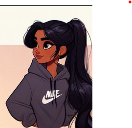

Présentateur du Podcast
Chercheuses et Collaboratrices
Dr. Grâce Soukou
Chercheuse, Analyse des Modèles Mathématiques
étudiante BUT2 Science des données

Dr. Marie Samaké
Chercheuse, Analyse Statistique des Données Médicales
étudiante BUT2 Science des données

Dr. Shankavi Selvanathan
Collaboratrice, Applications des Modèles en Oncologie
étudiante BUT2 Science des données
Dr. Mariama Leye
Collaboratrice, Recherches sur la Régression Logistique
étudiante BUT2 Science des données